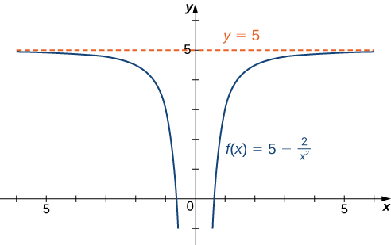
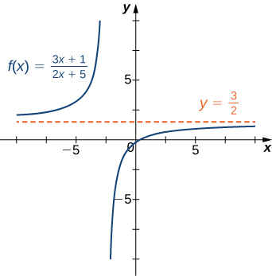
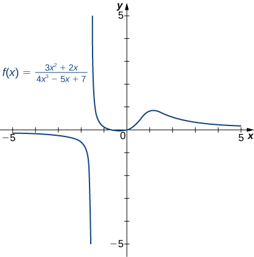
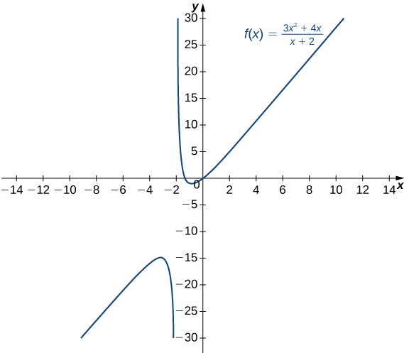

Section 4.6 Limits at Infinity and Asymptotes
Learning Objectives.
Calculate the limit of a function as \(x\) increases or decreases without bound.
Recognize a horizontal asymptote on the graph of a function.
Estimate the end behavior of a function as \(x\) increases or decreases without bound.
Analyze a function and its derivatives to draw its graph.
We have shown how to use the first and second derivatives of a function to describe the shape of a graph. To graph a function \(f\) defined on an unbounded domain, we also need to know the behavior of \(f\) as \(x\to\pm\infty.\) In this section, we define limits at infinity and show how these limits affect the graph of a function. At the end of this section, we outline a strategy for graphing an arbitrary function \(f.\)
Subsection 4.6.1 Limits at Infinity
We begin by examining what it means for a function to have a finite limit at infinity. Then we study the idea of a function with an infinite limit at infinity. Back in Introduction to Functions and Graphs 1, we looked at vertical asymptotes; in this section we deal with horizontal and oblique asymptotes.
Subsubsection 4.6.1.1 Limits at Infinity and Horizontal Asymptotes
Recall that \(\displaystyle{\lim_{x\to a}f(x)=L}\) means \(f(x)\) becomes arbitrarily close to \(L\) as long as \(x\) is sufficiently close to \(a.\) We can extend this idea to limits at infinity. For example, consider the function \(f(x)=2+\frac{1}{x}.\) As can be seen graphically in Figure 4.86 and numerically in Table 4.87, as the values of \(x\) get larger, the values of \(f(x)\) approach \(2.\) We say the limit as \(x\) approaches \(\infty\) of \(f(x)\) is \(2\) and write \(\displaystyle{\lim_{x\to\infty}f(x)=2.}\) Similarly, for \(x\lt 0,\) as the values \(|x|\) get larger, the values of \(f(x)\) approaches \(2.\) We say the limit as \(x\) approaches \(-\infty\) of \(f(x)\) is \(2\) and write \(\displaystyle{\lim_{x\to a}f(x)=2.}\)
| \(x\) | \(10\) | \(100\) | \(1,000\) | \(10,000\) |
| \(2+\frac{1}{x}\) | \(2.1\) | \(2.01\) | \(2.001\) | \(2.0001\) |
| \(x\) | \(-10\) | \(-100\) | \(-1000\) | \(-10,000\) |
| \(2+\frac{1}{x}\) | \(1.9\) | \(1.99\) | \(1.999\) | \(1.9999\) |
More generally, for any function \(f,\) we say the limit as \(x\to\infty\) of \(f(x)\) is \(L\) if \(f(x)\) becomes arbitrarily close to \(L\) as long as \(x\) is sufficiently large. In that case, we write \(\displaystyle{\lim_{x\to\infty}f(x)=L.}\) Similarly, we say the limit as \(x\to-\infty\) of \(f(x)\) is \(L\) if \(f(x)\) becomes arbitrarily close to \(L\) as long as \(x\lt 0\) and \(|x|\) is sufficiently large. In that case, we write \(\displaystyle{\lim_{x\to-\infty}f(x)=L.}\) We now look at the definition of a function having a limit at infinity.
Definition 4.88.
(Informal) If the values of \(f(x)\) become arbitrarily close to \(L\) as \(x\) becomes sufficiently large, we say the function \(f\) has a limit at infinity and write
If the values of \(f(x)\) becomes arbitrarily close to \(L\) for \(x\lt 0\) as \(|x|\) becomes sufficiently large, we say that the function \(f\) has a limit at negative infinity and write
If the values \(f(x)\) are getting arbitrarily close to some finite value \(L\) as \(x\to\infty\) or \(x\to-\infty,\) the graph of \(f\) approaches the line \(y=L.\) In that case, the line \(y=L\) is a horizontal asymptote of \(f\) (Figure 4.90). For example, for the function \(f(x)=\frac{1}{x},\) since \(\displaystyle{\lim_{x\to\infty}f(x)=0,}\) the line \(y=0\) is a horizontal asymptote of \(f(x)=\frac{1}{x}.\)
Definition 4.89.
If \(\displaystyle{\lim_{x\to\infty}f(x)=L}\) or \(\displaystyle{\lim_{x\to-\infty}f(x)=L,}\) we say the line \(y=L\) is a horizontal asymptote of \(f.\)
A function cannot cross a vertical asymptote because the graph must approach infinity (or \(-\infty)\) from at least one direction as \(x\) approaches the vertical asymptote. However, a function may cross a horizontal asymptote. The function \(f(x)=\frac{-2x+5}{x^2-4x+3}\) intersects its horizontal asymptote \(y=0\) once as shown in Figure 4.91
In fact, a function may cross a horizontal asymptote an unlimited number of times. For example, the function \(f(x)=\frac{(\cos x)}{x}+1\) shown in Figure 4.92 intersects the horizontal asymptote \(y=1\) an infinite number of times as it oscillates around the asymptote with ever-decreasing amplitude.
The algebraic limit laws we introduced in Introduction to Limits 2 also apply to limits at infinity. We illustrate how to use these laws to compute several limits at infinity. We will make use of the following theorem in order to evaluate limits at infinity.
Theorem 4.93.
For any number \(n>0\text{,}\)
Example 4.94. Computing Limits at Infinity.
For each of the following functions \(f,\) evaluate \(\displaystyle{\lim_{x\to\infty}f(x)}\) and \(\displaystyle{\lim_{x\to-\infty}f(x).}\) Determine the horizontal asymptote(s) for \(f.\)
\(\displaystyle f(x)=5-\frac{2}{x^2}\)
\(\displaystyle f(x)=2+\frac{3}{x}\)
- Using the algebraic limit laws, we have \(\displaystyle{\lim_{x\to\infty}\left(5-\frac{2}{x^2}\right)=\lim_{x\to\infty}5-2\left(\lim_{x\to\infty}\frac{1}{x}\right).\left(\lim_{x\to\infty}\frac{1}{x}\right)=5-2\cdot0=5.}\) Similarly, \(\displaystyle{\lim_{x\to-\infty}f(x)=5.}\) Therefore, \(f(x)=5-\frac{2}{x^2}\) has a horizontal asymptote of \(y=5\) and \(f\) approaches this horizontal asymptote as \(x\to\pm\infty\) as shown in the following graph. 
Figure 4.95. This function approaches a horizontal asymptote as \(x\to\pm\infty.\) Using the algebraic limit laws, we have \(\displaystyle{\lim_{x\to\infty}\left(2+\frac{3}{x}\right)=\lim_{x\to\infty}2+3\left(\lim_{x\to\infty}\frac{1}{x}\right)=2+2\cdot0=2.}\) Similarly, \(\displaystyle{\lim_{x\to-\infty}f(x)=2.}\) Therefore, \(f(x)=2+\frac{3}{x}\) has a horizontal asymptote of \(y=2\) and \(f\) approaches this horizontal asymptote as \(x\to\pm\infty\) as shown in the following graph.
Checkpoint 4.96.
Evaluate \(\displaystyle{\lim_{x\to-\infty}\left(3+\frac{4}{x}\right)}\) and \(\displaystyle{\lim_{x\to\infty}\left(3+\frac{4}{x}\right).}\) Determine the horizontal asymptotes of \(f(x)=3+\frac{4}{x},\) if any.
Subsubsection 4.6.1.2 Infinite Limits at Infinity
Sometimes the values of a function \(f\) become arbitrarily large as \(x\to\infty\) (or as \(x\to-\infty).\) In this case, we write \(\displaystyle{\lim_{x\to\infty}f(x)=\infty}\) (or \(\displaystyle{\lim_{x\to-\infty}f(x)=\infty).}\) On the other hand, if the values of \(f\) are negative but become arbitrarily large in magnitude as \(x\to\infty\) (or as \(x\to-\infty),\) we write \(\displaystyle{\lim_{x\to\infty}f(x)=-\infty}\) (or \(\displaystyle{\lim_{x\to-\infty}f(x)=-\infty).}\)
For example, consider the function \(f(x)=x^3.\) As seen in Table 4.97 and Figure 4.108, as \(x\to\infty\) the values \(f(x)\) become arbitrarily large. Therefore, \(\displaystyle{\lim_{x\to\infty}x^3=\infty.}\) On the other hand, as \(x\to-\infty,\) the values of \(f(x)=x^3\) are negative but become arbitrarily large in magnitude. Consequently, \(\displaystyle{\lim_{x\to-\infty}x^3=-\infty.}\)
| \(x\) | \(10\) | \(20\) | \(50\) | \(100\) | \(1000\) |
| \(x^3\) | \(1000\) | \(8000\) | \(125,000\) | \(1,000,000\) | \(1,000,000,000\) |
| \(x\) | \(-10\) | \(-20\) | \(-50\) | \(-100\) | \(-1000\) |
| \(x^3\) | \(-1000\) | \(-8000\) | \(-125,000\) | \(-1,000,000\) | \(-1,000,000,000\) |
Definition 4.99.
(Informal) We say a function \(f\) has an infinite limit at infinity and write
if \(f(x)\) becomes arbitrarily large for \(x\) sufficiently large. We say a function has a negative infinite limit at infinity and write
if \(f(x)\lt 0\) and \(|f(x)|\) becomes arbitrarily large for \(x\) sufficiently large. Similarly, we can define infinite limits as \(x\to-\infty.\)
Subsection 4.6.2 End Behavior
The behavior of a function as \(x\to\pm\infty\) is called the function's end behavior. At each of the function's ends, the function could exhibit one of the following types of behavior:
The function \(f(x)\) approaches a horizontal asymptote \(y=L.\)
The function \(f(x)\to\infty\) or \(f(x)\to-\infty.\)
The function does not approach a finite limit, nor does it approach \(\infty\) or \(-\infty.\) In this case, the function may have some oscillatory behavior.
Let's consider several classes of functions here and look at the different types of end behaviors for these functions.
Subsubsection 4.6.2.1 End Behavior for Polynomial Functions
Consider the power function \(f(x)=x^n\) where \(n\) is a positive integer. From Figure 4.100 and Figure 4.101, we see that
and
Using these facts, it is not difficult to evaluate \(\displaystyle{\lim_{x\to\infty}cx^n}\) and \(\displaystyle{\lim_{x\to-\infty}cx^n,}\) where \(c\) is any constant and \(n\) is a positive integer. If \(c\gt 0,\) the graph of \(y=cx^n\) is a vertical stretch or compression of \(y=x^n,\) and therefore
If \(c\lt 0,\) the graph of \(y=cx^n\) is a vertical stretch or compression combined with a reflection about the \(x\)-axis, and therefore
If \(c=0,y=cx^n=0,\) in which case \(\displaystyle{\lim_{x\to\infty}cx^n=0=\lim_{x\to-\infty}cx^n.}\)
Example 4.102. Limits at Infinity for Power Functions.
For each function \(f,\) evaluate \(\displaystyle{\lim_{x\to\infty}f(x)}\) and \(\displaystyle{\lim_{x\to-\infty}f(x).}\)
\(\displaystyle f(x)=-5x^3\)
\(\displaystyle f(x)=2x^4\)
Since the coefficient of \(x^3\) is \(-5,\) the graph of \(f(x)=-5x^3\) involves a vertical stretch and reflection of the graph of \(y=x^3\) about the \(x\)-axis. Therefore, \(\displaystyle{\lim_{x\to\infty}(-5x^3)=-\infty}\) and \(\displaystyle{\lim_{x\to-\infty}(-5x^3)=\infty.}\)
Since the coefficient of \(x^4\) is \(2,\) the graph of \(f(x)=2x^4\) is a vertical stretch of the graph of \(y=x^4.\) Therefore, \(\displaystyle{\lim_{x\to\infty}2x^4=\infty}\) and \(\displaystyle{\lim_{x\to-\infty}2x^4=\infty.}\)
Checkpoint 4.103.
Let \(f(x)=-3x^4.\) Find \(\displaystyle{\lim_{x\to\infty}f(x).}\)
We now look at how the limits at infinity for power functions can be used to determine \(\displaystyle{\lim_{x\to\pm\infty}f(x)}\) for any polynomial function \(f.\) Consider a polynomial function
of degree \(n\geq 1\) so that \(a_n\neq 0.\) Factoring, we see that
As \(x\to\pm\infty,\) all the terms inside the parentheses approach zero except the first term. We conclude that
For example, the function \(f(x)=5x^3-3x^2+4\) behaves like \(g(x)=5x^3\) as \(x\to\pm\infty\) as shown in Figure 4.104 and Table 4.105.
| \(x\) | \(10\) | \(100\) | \(1000\) |
| \(f(x)=5x^3-3x^2+4\) | \(4704\) | \(4,970,004\) | \(4,997,000,004\) |
| \(g(x)=5x^3\) | \(5000\) | \(5,000,000\) | \(5,000,000,000\) |
| \(x\) | \(-10\) | \(-100\) | \(-1000\) |
| \(f(x)=5x^3-3x^2+4\) | \(-5296\) | \(-5,029,996\) | \(-5,002,999,996\) |
| \(g(x)=5x^3\) | \(-5000\) | \(-5,000,000\) | \(-5,000,000,000\) |
Subsubsection 4.6.2.2 End Behavior for Algebraic Functions
The end behavior for rational functions and functions involving radicals is a little more complicated than for polynomials. In Example 4.106, we show that the limits at infinity of a rational function \(f(x)=\frac{p(x)}{q(x)}\) depend on the relationship between the degree of the numerator and the degree of the denominator. To evaluate the limits at infinity for a rational function, we divide the numerator and denominator by the highest power of \(x\) appearing in the denominator. This determines which term in the overall expression dominates the behavior of the function at large values of \(x.\)
Example 4.106. Determining End Behavior for Rational Functions.
For each of the following functions, determine the limits as \(x\to\infty\) and \(x\to-\infty.\) Then, use this information to describe the end behavior of the function.
\(f(x)=\frac{3x-1}{2x+5}\) (Note: The degree of the numerator and the denominator are the same.)
\(f(x)=\frac{3x^2+2x}{4x^3-5x+7}\) (Note: The degree of numerator is less than the degree of the denominator.)
\(f(x)=\frac{3x^2+4x}{x+2}\) (Note: The degree of numerator is greater than the degree of the denominator.)
- The highest power of \(x\) in the denominator is \(x.\) Therefore, dividing the numerator and denominator by \(x\) and applying the algebraic limit laws, we see that\begin{align*} \displaystyle{\lim_{x\to\pm\infty}\frac{3x-1}{2x+5}\amp =\lim_{x\to\pm\infty}\frac{3-1/x}{2+5/x}}\\ \amp=\displaystyle{\frac{\lim_{x\to\pm\infty}(3-1/x)}{\lim_{x\to\pm\infty}(2+5/x)}}\\ \amp=\displaystyle{\frac{\lim_{x\to\pm\infty}3-\lim_{x\to\pm\infty}1/x}{\lim_{x\to\pm\infty}2+\lim_{x\to\pm\infty}5/x}}\\ =\frac{3-0}{2+0}=\frac{3}{2}. \end{align*}Since \(\displaystyle{\lim_{x\to\pm\infty}f(x)=\frac{3}{2}},\) we know that \(y=\frac{3}{2}\) is a horizontal asymptote for this function as shown in the following graph.
Figure 4.107. The graph of this rational function approaches a horizontal asymptote as \(x\to\pm\infty.\) - Since the largest power of \(x\) appearing in the denominator is \(x^3,\) divide the numerator and denominator by \(x^3.\) After doing so and applying algebraic limit laws, we obtain\begin{equation*} \lim_{x\to\pm\infty}\frac{3x^2+2x}{4x^3-5x+7}=\lim_{x\to\pm\infty}\frac{3/x+2/x^2}{4-5/x^2+7/x^3}=\frac{3(0)+2(0)}{4-5(0)+7(0)}=0. \end{equation*}Therefore \(f\) has a horizontal asymptote of \(y=0\) as shown in the following graph.
Figure 4.108. The graph of this rational function approaches the horizontal asymptote \(y=0\) as \(x\to\pm\infty.\) - Dividing the numerator and denominator by \(x,\) we have\begin{equation*} \lim_{x\to\pm\infty}\frac{3x^2+4x}{x+2}=\lim_{x\to\pm\infty}\frac{3x+4}{1+2/x}. \end{equation*}As \(x\to\pm\infty,\) the denominator approaches \(1.\) As \(x\to\infty,\) the numerator approaches \(+\infty.\) As \(x\to-\infty,\) the numerator approaches \(-\infty.\) Therefore \(\displaystyle{\lim_{x\to\infty}f(x)=\infty},\) whereas \(\displaystyle{\lim_{x\to-\infty}f(x)=-\infty}\) as shown in the following figure.
Figure 4.109. As \(x\to\infty,\) the values \(f(x)\to\infty.\) As \(x\to-\infty,\) the values \(f(x)\to-\infty.\)
Checkpoint 4.110.
Evaluate \(\displaystyle{\lim_{x\to\pm\infty}\frac{3x^2+2x-1}{5x^2-4x+7}}\) and use these limits to determine the end behavior of \(f(x)=\frac{3x^2+2x-1}{5x^2-4x+7}.\)
We can summarize the results of Example 4.106 to make the following conclusion regarding end behavior for rational functions. Consider a rational function
where \(a_n\neq 0 \text{ and } b_m\neq 0.\)
If the degree of the numerator is the same as the degree of the denominator \((n=m),\) then \(f\) has a horizontal asymptote of \(y=a_n/b_m\) as \(x\to\pm\infty.\)
If the degree of the numerator is less than the degree of the denominator \((n\lt m),\) then \(f\) has a horizontal asymptote of \(y=0\) as \(x\to\pm\infty.\)
If the degree of the numerator is greater than the degree of the denominator \((n\gt m),\) then \(f\) does not have a horizontal asymptote. The limits at infinity are either positive or negative infinity, depending on the signs of the leading terms. In addition, using long division, the function can be rewritten as
\begin{equation*} f(x)=\frac{p(x)}{q(x)}=g(x)+\frac{r(x)}{q(x)}, \end{equation*}where the degree of \(r(x)\) is less than the degree of \(q(x).\) As a result, \(\displaystyle{\lim_{x\to\pm\infty}r(x)/q(x)=0.}\) Therefore, the values of \([f(x)-g(x)]\) approach zero as \(x\to\pm\infty.\) Now let's consider the end behavior for functions involving a radical.
Example 4.111. Determining End Behavior for a Function Involving a Radical.
Find the limits as \(x\to\infty\) and \(x\to-\infty\) for \(f(x)=\frac{3x-2}{\sqrt{4x^2+5}}\) and describe the end behavior of \(f.\)
Let's use the same strategy as we did for rational functions: divide the numerator and denominator by a power of \(x.\) To determine the appropriate power of \(x,\) consider the expression \(\sqrt{4x^2+5}\) in the denominator. Since
for large values of \(x\) in effect \(x\) appears just to the first power in the denominator. Therefore, we divide the numerator and denominator by \(|x|.\) Then, using the fact that \(|x|=x\) for \(x\gt 0,\) \(|x|=-x\) for \(x\lt 0,\) and \(|x|=\sqrt{x^2}\) for all \(x,\) we calculate the limits as follows:
Therefore, \(f(x)\) approaches the horizontal asymptote \(y=\frac{3}{2}\) as \(x\to\infty\) and the horizontal asymptote \(y=-\frac{3}{2}\) as \(x\to-\infty\) as shown in the following graph.
Checkpoint 4.113.
Evaluate \(\displaystyle{\lim_{x\to\infty}\frac{\sqrt{3x^2+4}}{x+6}.}\)
Subsubsection 4.6.2.3 Determining End Behavior for Transcendental Functions
Recall that for any base \(b\gt 0,b\neq 1,\) the function \(y=b^x\) is an exponential function with domain \((-\infty,\infty)\) and range \((0,\infty).\) If \(b\gt 1,y=b^x\) is increasing over \((-\infty,\infty).\) If \(0\lt b\lt 1,\) \(y=b^x\) is decreasing over \((-\infty,\infty).\) For the natural exponential function \(f(x)=e^x,\) \(e\approx 2.718\gt 1.\) Therefore, \(f(x)=e^x\) is increasing on \((-\infty,\infty)\) and the range is \((0,\infty).\) The exponential function \(f(x)=e^x\) approaches \(\infty\) as \(x\to\infty\) and approaches \(0\) as \(x\to-\infty\) as shown in Table 4.114 and Figure 4.115.
| \(x\) | \(-5\) | \(-2\) | \(0\) | \(2\) | \(5\) |
| \(e^x\) | \(0.00674\) | \(0.135\) | \(1\) | \(7.389\) | \(148.413\) |
Recall that the natural logarithm function \(f(x)=\text{ ln }(x)\) is the inverse of the natural exponential function \(y=e^x.\) Therefore, the domain of \(f(x)=\text{ ln }(x)\) is \((0,\infty)\) and the range is \((-\infty,\infty).\) The graph of \(f(x)=\text{ ln }(x)\) is the reflection of the graph of \(y=e^x\) about the line \(y=x.\) Therefore, \(\text{ ln }(x)\to-\infty\) as \(x\to0^+\) and \(\text{ ln }(x)\to\infty\) as \(x\to\infty\) as shown in Figure 4.98 and Table 4.116.
| \(x\) | \(0.01\) | \(0.1\) | \(1\) | \(10\) | \(100\) |
| \(\text{ ln }(x)\) | \(-4.605\) | \(-2.303\) | \(0\) | \(2.303\) | \(4.605\) |
Example 4.118. Determining End Behavior for a Transcendental Function.
Find the limits as \(x\to\infty\) and \(x\to-\infty\) for \(f(x)=\frac{(2+3e^x)}{(7-5e^x)}\) and describe the end behavior of \(f.\)
To find the limit as \(x\to\infty,\) divide the numerator and denominator by \(e^x\text{ : }\)
As shown in Figure 4.115, \(e^x\to\infty\) as \(x\to\infty.\) Therefore,
We conclude that \(\displaystyle{\lim_{x\to\infty}f(x)=-\frac{3}{5}},\) and the graph of \(f\) approaches the horizontal asymptote \(y=-\frac{3}{5}\) as \(x\to\infty.\) To find the limit as \(x\to-\infty,\) use the fact that \(e^x\to0\) as \(x\to-\infty\) to conclude that \(\displaystyle{\lim_{x\to\infty}f(x)=\frac{2}{7}},\) and therefore the graph of approaches the horizontal asymptote \(y=\frac{2}{7}\) as \(x\to-\infty.\)
Checkpoint 4.119.
Find the limits as \(x\to\infty\) and \(x\to-\infty\) for \(f(x)=\frac{(3e^x-4)}{(5e^x+2)}.\)
Subsection 4.6.3 Guidelines for Drawing the Graph of a Function
We now have enough analytical tools to draw graphs of a wide variety of algebraic and transcendental functions. Before showing how to graph specific functions, let's look at a general strategy to use when graphing any function.
Note 4.120. Problem-Solving Strategy: Drawing the Graph of a Function.
Given a function \(f,\) use the following steps to sketch a graph of \(f\text{ : }\)
Determine the domain of the function.
Locate the \(x\)- and \(y\)-intercepts.
Evaluate \(\displaystyle{\lim_{x\to\infty}f(x)}\) and \(\displaystyle{\lim_{x\to-\infty}f(x)}\) to determine the end behavior. If either of these limits is a finite number \(L,\) then \(y=L\) is a horizontal asymptote.
Determine whether \(f\) has any vertical asymptotes.
Calculate \(f'.\) Find all critical points and determine the intervals where \(f\) is increasing and where \(f\) is decreasing. Determine whether \(f\) has any local extrema.
Calculate \(f''.\) Determine the intervals where \(f\) is concave up and where \(f\) is concave down. Use this information to determine whether \(f\) has any inflection points. The second derivative can also be used as an alternate means to determine or verify that \(f\) has a local extremum at a critical point.
Now let's use this strategy to graph several different functions. We start by graphing a polynomial function.
Example 4.121. Sketching a Graph of a Polynomial.
Sketch a graph of \(f(x)=(x-1)^2(x+2).\)
Step 1. Since \(f\) is a polynomial, the domain is the set of all real numbers.
Step 2. When \(x=0,f(x)=2.\) Therefore, the \(y\)-intercept is \((0,2).\) To find the \(x\)-intercepts, we need to solve the equation \((x-1)^2(x+2)=0,\) gives us the \(x\)-intercepts \((1,0)\) and \((-2,0)\)
Step 3. We need to evaluate the end behavior of \(f.\) As \(x\to\infty,\) \((x-1)^2\to\infty\) and \((x+2)\to\infty.\) Therefore, \(\displaystyle{\lim_{x\to\infty}f(x)=\infty.}\) As \(x\to-\infty,\) \((x-1)^2\to\infty\) and \((x+2)\to-\infty.\) Therefore, \(\displaystyle{\lim_{x\to-\infty}f(x)=-\infty.}\) To get even more information about the end behavior of \(f,\) we can multiply the factors of \(f.\) When doing so, we see that
Since the leading term of \(f\) is \(x^3,\) we conclude that \(f\) behaves like \(y=x^3\) as \(x\to\pm\infty.\)
Step 4. Since \(f\) is a polynomial function, it does not have any vertical asymptotes.
Step 5. The first derivative of \(f\) is
Therefore, \(f\) has two critical points: \(x=1,-1.\) Divide the interval \((-\infty,\infty)\) into the three smaller intervals: \((-\infty,-1),\) \((-1,1),\) and \((1,\infty).\) Then, choose test points \(x=-2,\) \(x=0,\) and \(x=2\) from these intervals and evaluate the sign of \(f'(x)\) at each of these test points, as shown in the following table.
| Interval | Test Point | Sign of Derivative \(f(x)=3x^2-3=3(x-1)(x+1)\) | Conclusion |
|---|---|---|---|
| \((-\infty,-1)\) | \(x=-2\) | \((+)(-)(-)=+\) | \(f\) is increasing. |
| \((-1,1)\) | \(x=0\) | \((+)(-)(+)=-\) | \(f\) is decreasing. |
| \((1,\infty)\) | \(x=2\) | \((+)(+)(+)=+\) | \(f\) is increasing. |
From the table, we see that \(f\) has a local maximum at \(x=-1\) and a local minimum at \(x=1.\) Evaluating \(f(x)\) at those two points, we find that the local maximum value is \(f(-1)=4\) and the local minimum value is \(f(1)=0.\)
Step 6. The second derivative of \(f\) is
The second derivative is zero at \(x=0.\) Therefore, to determine the concavity of \(f,\) divide the interval \((-\infty,\infty)\) into the smaller intervals \((-\infty,0)\) and \((0,\infty),\) and choose test points \(x=-1\) and \(x=1\) to determine the concavity of \(f\) on each of these smaller intervals as shown in the following table.
| Interval | Test Point | Sign of \(f''(x)=6x\) | Conclusion |
|---|---|---|---|
| \((-\infty,0)\) | \(x=-1\) | \(-\) | \(f\) is concave down. |
| \((0,\infty)\) | \(x=1\) | \(+\) | \(f\) is concave up. |
We note that the information in the preceding table confirms the fact, found in step \(5,\) that \(f\) has a local maximum at \(x=-1\) and a local minimum at \(x=1.\) In addition, the information found in step \(5\)—namely, \(f\) has a local maximum at \(x=-1\) and a local minimum at \(x=1,\) and \(f'(x)=0\) at those points—combined with the fact that \(f''\) changes sign only at \(x=0\) confirms the results found in step \(6\) on the concavity of \(f.\)
Combining this information, we arrive at the graph of \(f(x)=(x-1)^2(x+2)\) shown in the following graph.
Checkpoint 4.125.
Sketch a graph of \(f(x)=(x-1)^3(x+2).\)
Example 4.127. Sketching a Rational Function.
Sketch the graph of \(f(x)=\frac{x^2}{(1-x^2)}\text{ . }\)
Step 1. The function \(f\) is defined as long as the denominator is not zero. Therefore, the domain is the set of all real numbers \(x\) except \(x=\pm1.\)
Step 2. Find the intercepts. If \(x=0,\) then \(f(x)=0,\) so \(0\) is an intercept. If \(y=0,\) then \(\frac{x^2}{(1-x^2)}=0,\) which implies \(x=0.\) Therefore, \((0,0)\) is the only intercept.
Step 3. Evaluate the limits at infinity. Since \(f\) is a rational function, divide the numerator and denominator by the highest power in the denominator: \(x^2.\) We obtain
Therefore, \(f\) has a horizontal asymptote of \(y=-1\) as \(x\to\infty\) and \(x\to-\infty.\)
Step 4. To determine whether \(f\) has any vertical asymptotes, first check to see whether the denominator has any zeroes. We find the denominator is zero when \(x=\pm1.\) To determine whether the lines \(x=1\) or \(x=-1\) are vertical asymptotes of \(f,\) evaluate \(\displaystyle{\lim_{x\to1}f(x)}\) and \(\displaystyle{\lim_{x\to-1}f(x).}\) By looking at each one-sided limit as \(x\to1,\) we see that
In addition, by looking at each one-sided limit as \(x\to-1,\) we find that
Step 5. Calculate the first derivative:
Critical points occur at points \(x\) where \(f'(x)=0\) or \(f'(x)\) is undefined. We see that \(f'(x)=0\) when \(x=0.\) The derivative \(f'\) is not undefined at any point in the domain of \(f.\) However, \(x=\pm1\) are not in the domain of \(f.\) Therefore, to determine where \(f\) is increasing and where \(f\) is decreasing, divide the interval \((-\infty,\infty)\) into four smaller intervals: \((-\infty,-1),\) \((-1,0),\) \((0,1),\) and \((1,\infty),\) and choose a test point in each interval to determine the sign of \(f'(x)\) in each of these intervals. The values \(x=-2,\) \(x=-\frac{1}{2},\) \(x=\frac{1}{2},\) and \(x=2\) are good choices for test points as shown in the following table.
| Interval | Test Point | Sign of \(f'(x)=\frac{2x}{(1-x^2)^2}\) | Conclusion |
|---|---|---|---|
| \((-\infty,-1)\) | \(x=-2\) | \(-/+=-\) | \(f\) is decreasing. |
| \((-1,0)\) | \(x=-1/2\) | \(-/+=-\) | \(f\) is decreasing. |
| \((0,1)\) | \(x=1/2\) | \(+/+=+\) | \(f\) is increasing. |
| \((1,\infty)\) | \(x=2\) | \(+/+=+\) | \(f\) is increasing. |
From this analysis, we conclude that \(f\) has a local minimum at \(x=0\) but no local maximum.
Step 6. Calculate the second derivative:
To determine the intervals where \(f\) is concave up and where \(f\) is concave down, we first need to find all points \(x\) where \(f''(x)=0\) or \(f''(x)\) is undefined. Since the numerator \(6x^2+2\neq 0\) for any \(x,\) \(f''(x)\) is never zero. Furthermore, \(f''\) is not undefined for any \(x\) in the domain of \(f.\) However, as discussed earlier, \(x=\pm1\) are not in the domain of \(f.\) Therefore, to determine the concavity of \(f,\) we divide the interval \((-\infty,\infty)\) into the three smaller intervals \((-\infty,-1),\) \((-1,-1),\) and \((1,\infty),\) and choose a test point in each of these intervals to evaluate the sign of \(f''(x).\) in each of these intervals. The values \(x=-2,\) \(x=0,\) and \(x=2\) are possible test points as shown in the following table.
| Interval | Test Point | Sign of \(f''(x)=\frac{6x^2+2}{(1-x^2)^3}\) | Conclusion |
|---|---|---|---|
| \((-\infty,-1)\) | \(x=-2\) | \(+/-=-\) | \(f\) is concave down. |
| \((-1,-1)\) | \(x=0\) | \(+/+=+\) | \(f\) is concave up. |
| \((1,\infty)\) | \(x=2\) | \(+/-=-\) | \(f\) is concave down. |
Combining all this information, we arrive at the graph of \(f\) shown below. Note that, although \(f\) changes concavity at \(x=-1\) and \(x=1,\) there are no inflection points at either of these places because \(f\) is not continuous at \(x=-1\) or \(x=1.\)
Checkpoint 4.130.
Sketch a graph of \(f(x)=\frac{(3x+5)}{(8+4x)}.\)
Example 4.131. Sketching the Graph of a Function with a Cusp.
Sketch a graph of \(f(x)=(x-1)^{2/3}.\)
Step 1. Since the cube-root function is defined for all real numbers \(x\) and \((x-1)^{2/3}=(\sqrt[3]{x-1})^2,\) the domain of \(f\) is all real numbers.
Step 2: To find the \(y\)-intercept, evaluate \(f(0).\) Since \(f(0)=1,\) the \(y\)-intercept is \((0,1).\) To find the \(x\)-intercept, solve \((x-1)^{2/3}=0.\) The solution of this equation is \(x=1,\) so the \(x\)-intercept is \((1,0).\)
Step 3: Since \(\lim_{x\to\pm\infty}(x-1)^{2/3}=\infty,\) the function continues to grow without bound as \(x\to\infty\) and \(x\to-\infty.\)
Step 4: The function has no vertical asymptotes.
Step 5: To determine where \(f\) is increasing or decreasing, calculate \(f'.\) We find
This function is not zero anywhere, but it is undefined when \(x=1.\) Therefore, the only critical point is \(x=1.\) Divide the interval \((-\infty,\infty)\) into the smaller intervals \((-\infty,1)\) and \((1,\infty),\) and choose test points in each of these intervals to determine the sign of \(f'(x)\) in each of these smaller intervals. Let \(x=0\) and \(x=2\) be the test points as shown in the following table.
| Interval | Test Point | Sign of \(f'(x)=\frac{2}{3(x-1)^{1/3}}\) | Conclusion |
|---|---|---|---|
| \((-\infty,1)\) | \(x=0\) | \(+/-=-\) | \(f\) is decreasing. |
| \((1,\infty)\) | \(x=2\) | \(+/+=+\) | \(f\) is increasing. |
We conclude that \(f\) has a local minimum at \(x=1.\) Evaluating \(f\) at \(x=1,\) we find that the value of \(f\) at the local minimum is zero. Note that \(f'(1)\) is undefined, so to determine the behavior of the function at this critical point, we need to examine \(\lim_{x\to 1}f'(x).\) Looking at the one-sided limits, we have
Therefore, \(f\) has a cusp at \(x=1.\)
Step 6: To determine concavity, we calculate the second derivative of \(f\text{ : }\)
We find that \(f''(x)\) is defined for all \(x,\) but is undefined when \(x=1.\) Therefore, divide the interval \((-\infty,\infty)\) into the smaller intervals \((-\infty,1)\) and \((1,\infty),\) and choose test points to evaluate the sign of \(f''(x)\) in each of these intervals. As we did earlier, let \(x=0\) and \(x=2\) be test points as shown in the following table.
| Interval | Test Point | Sign of \(f''(x)=\frac{-2}{9(x-1)^{4/3}}\) | Conclusion |
|---|---|---|---|
| \((-\infty,1)\) | \(x=0\) | \(-/+=-\) | \(f\) is concave down. |
| \((1,\infty)\) | \(x=2\) | \(-/+=-\) | \(f\) is concave down. |
From this table, we conclude that \(f\) is concave down everywhere. Combining all of this information, we arrive at the following graph for \(f.\)
Checkpoint 4.134.
Consider the function \(f(x)=5-x^2/3.\) Determine the point on the graph where a cusp is located. Determine the end behavior of \(f.\)
A function \(f\) has a cusp at a point \(a\) if \(f(a)\) exists, \(f(a)\) is undefined, one of the one-sided limits as \(x\to a\) of \(f(x)\) is \(+\infty,\) and the other one-sided limit is \(-\infty.\)
The function \(f\) has a cusp at \((0,5)\) \(\lim_{x\to0^-}f'(x)=\infty,\) \(\lim_{x\to0^+}f'(x)=-\infty.\) For end behavior, \(\lim_{x\to\pm\infty}f(x)=-\infty.\)
Subsection 4.6.4 Key Concepts
The limit of \(f(x)\) is \(L\) as \(x\to\infty\) (or as \(x\to-\infty)\) if the values \(f(x)\) become arbitrarily close to \(L\) as \(x\) becomes sufficiently large.
The limit of \(f(x)\) is \(\infty\) as \(x\to\infty\) if \(f(x)\) becomes arbitrarily large as \(x\) becomes sufficiently large. The limit of \(f(x)\) is \(-\infty\) as \(x\to\infty\) if \(f(x)\lt 0\) and \(|f(x)|\) becomes arbitrarily large as \(x\) becomes sufficiently large. We can define the limit of \(f(x)\) as \(x\) approaches \(-\infty\) similarly.
For a polynomial function \(p(x)=a_nx^n+a_{n-1} x^{n-1} +\dots+a_1x+a_0,\) where \(a_n\neq 0,\) the end behavior is determined by the leading term \(a_nx^n.\) If \(n\neq 0,\) \(p(x)\) approaches \(\infty\) or \(-\infty\) at each end.
For a rational function \(f(x)=\frac{p(x)}{q(x)},\) the end behavior is determined by the relationship between the degree of \(p\) and the degree of \(q.\) If the degree of \(p\) is less than the degree of \(q,\) the line \(y=0\) is a horizontal asymptote for \(f.\) If the degree of \(p\) is equal to the degree of \(q,\) then the line \(y=\frac{a_n}{b_n}\) is a horizontal asymptote, where \(a_n\) and \(b_n\) are the leading coefficients of \(p\) and \(q,\) respectively. If the degree of \(p\) is greater than the degree of \(q,\) then \(f\) approaches \(\infty\) or \(-\infty\) at each end.